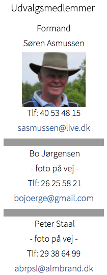

<div class="pages">
  <div data-page="regler" class="page navbar-fixed toolbar-fixed" >
    <div class="navbar">
      <div class="navbar-inner">
        <div class="left">
          <a href="#" class="link back icon-only"><i class="icon icon-back"></i></a>
          <!-- <a href="#" class="back link icon-only"><i class="icon icon-back"></i></a> -->
        </div>
        <div class="center">Regel- og handicapudvalget</div>
        <!-- <div class="right"></div> -->
        <div class="right">
        </div>
      </div>
    </div>
    <div class="page-content" style="padding-top:45px;">
       <div class="content-block">
          <p>Det overordnede ansvar for regler (kendskab og afgørelse) samt handicap påhviler Regel- og Handicapudvalget.
           <br /><br />
          Udvalget har ansvaret for:<br /><br />
          • kendskab til de til enhver tid gældende regler<br />
          • træffe afgørelser i forbindelse med regel-spørgsmål<br />
          • ajourføring samt offentliggørelse af medlemmernes handicap<br />
          • scorekort<br />
          • lokalregler, herunder midlertidige lokalregler samt offentliggørelse af disse<br />
          • banens rating (i samarbejde med baneudvalget)<br />
          • Baneguide (i samarbejde med baneudvalget)</p>
          
        </div>
    </div>
    </div>
    </div>
  </div>
</div>
